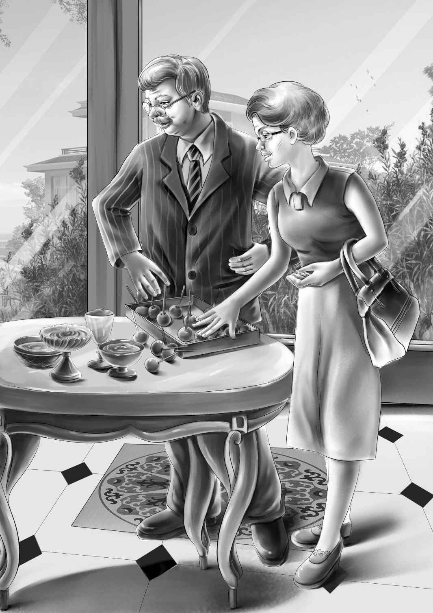

Chapter 5 An Old Flintlock Gun
奥登一家人发现了一家非常不错的汽车旅馆，服务生允许他们带望望进去，条件是要把它拴起来。望望虽然很不喜欢被如此对待，但还是顺从地趴在了床边。
星期天早晨，吃过早饭后，亨利建议道：“反正工人们星期天休息，咱们不如去看看那把古董枪吧？”
于是，一家人开车来到了杂货店。杂货店还没开门，摩尔斯先生看到了他们，赶紧下楼将客人迎了进来。
“我敢说，你们一定是来看那把古董枪的！”他说，“来，跟我上楼吧！家里就我一个人，我太太很多年前就去世了。”
等大家上楼落座后，摩尔斯先生便走到架子旁，取下一把样子古怪的枪。
班尼说：“我从没见过这么奇怪的枪。它能用么？能射出子弹么？”
“当然能，只是我还不知道该怎么用。它叫燧发火枪，独立战争时期都是用的这种火枪。”
“我大概知道它的构造，”亨利说，“能把枪给我一会儿吗？看，这里是火药槽，专门用来放置火药的。这是燧石，只要一扣动扳机，燧石就会打火，点燃火药。”
“枪声一定大得惊人。”班尼说。
“是的，动静相当大，书里是这么说的。我想开枪的人自己的耳朵都会被震伤呐！”摩尔斯先生回答道。
爷爷问：“以利沙，你是从哪里得到这把枪的？”
“是从豆先生家里要来的。安迪逃走以后，他们就不愿再看到这把枪了。本来他们想把它扔掉，我就说不如给我吧。之后枪就一直搁在那个架子上，一搁就是50年，其间我一次都没擦过。”
亨利说着，把枪递给了杰西，杰西说：“它应该待在博物馆里。”
亨利问道：“你说过镇子里最年长的人是谁，科尔爷爷吗？”
“我没告诉你们关于科尔爷爷的事啊！应该是我儿子说的。”
“是西姆的妻子告诉我们的，”维莉说，“她说科尔爷爷快100岁了。您知道他住在哪里吗？”
“我们能去拜访他吗？”奥登先生问道。他向来都是这么雷厉风行。
“当然可以，他会喜出望外的，要知道现在几乎没人去他家做客了。他太老了，总是唠叨一些陈芝麻烂谷子的事情。”摩尔斯先生说。
“那很好，”爷爷说，“我们就是想听他唠叨以前的事。”
“那他不会让你们失望的。”摩尔斯先生笑着说，“你们沿着这条路往回走，穿过你们的农场，下一座房子就是科尔爷爷的，是座小小的白色房子，围着一圈白栅栏。”奥登家的旅行车又开回到大路上，他们经过了依旧架着梯子的自家房子后，很快便看到了围着白栅栏的小白屋。到达目的地，大家都下了车。
“希望我们不会吓到他，”班尼说，“家里呼啦啦一下子来了这么多陌生人呢！”
科尔先生并没有被吓到，相反倒是很高兴。他走出房间，来到院子里，请大家坐到长凳上。一位面容慈祥的老妈妈出来将他扶到一把舒适的椅子上。
“我们不会打扰您太久的，科尔先生。”爷爷开口道。
“就叫我科尔爷爷吧！”老先生说。
“好吧！”奥登先生面带微笑地说，“我们想问几个问题，又不想让您太累。”
“你们不会累着我的，随你们在这儿待多久都行。”科尔爷爷说，“我喜欢和客人聊天，可惜家里很少来人。”
“那就好了！”班尼说，“我们要打听的事情非常要紧呢！”
“什么事情这么重要？”科尔爷爷问，“你们想知道些什么？”
爷爷接过话头：“您应该听说过豆家的安迪和他那把火枪的故事吧？”
“当然喽！那是把老式的燧石火枪。安迪用火枪放了一把大火后就逃跑了。”
“对，这就是我们想知道的。”奥登先生往前倾了一下身子，“那把火枪是从哪里来的？”
“火枪从哪里来？噢，这个简单，它原先就藏在你们刚买的老房子里！有人把枪给了安迪。当然，这又是另一个故事了。我不知道是谁给了安迪枪，但有一点可以肯定，有人藏在你们的老房子里！”
“藏在老房子里？为什么？”班尼问道。
“我也不清楚，我敢说，安迪的弟弟也不知道。他从不愿谈起这件事，不过，我可以告诉你们谁知道这件事。”
“谁？”大家异口同声地问。
“我弟弟。他才92岁，而我都99岁了。他比我年轻，所以记性也比我好。”
“他叫什么？”亨利问道。
“他也叫科尔，不过大家都管他叫约翰·科尔，而不是科尔爷爷。”
“那他现在在哪里？”杰西急切地问道。
“在纽约。他冬天的时候住在城里，夏天就来镇上避暑。再过一两个星期他就该过来了——也许只用等上几天吧，我已经记不清日子啦。”
维莉对杰西说：“说不定等我们下次再来镇上，他也过来了，到那时我们再去问吧！而且那个时候，简姑婆也已经住过来了。”
除此之外，科尔爷爷也不知道更多事情了。但是，正如亨利所说，再小的线索也有帮助。
当奥登一家人察觉到科尔爷爷开始面露疲态后，便立即起身告辞了。
“十分感谢您！”奥登先生站了起来，握了握老先生的手。“这些孩子过几天还会再来镇上，帮我姐姐简布置房子的。”
“是啊，我都听说了，”科尔爷爷说，“希望你姐姐在那房子里平平安安的。”说完，他摇了摇头。
“这个夏天我们也要住在那座房子里呢！”班尼说，“我们要看望简姑婆。”
“到时候也顺便来看看我吧！”科尔爷爷说。在回自家农场的路上，奥登先生说：“不如我们直接回家吧，咱们留在这儿也没多大意义了。”
“可是您不去见见西姆，告诉他们该如何做吗？”班尼问。
“不用了，我早就跟他们交代清楚了。”爷爷说。
于是，一家人和新朋友们一一告别后，便径直回家了。几个星期以后，爷爷终于接到了电话，说房子已经修好了。此时，杰西和维莉早已准备好了新窗帘，以及床单、被褥、毛巾之类的许多东西。
大家屋里屋外折腾了好多趟，才将所有包裹塞进了旅行车。装好车以后，几乎都没有地方让望望坐了。
约翰·卡特负责开飞机将简姑婆接过来，而替简姑婆工作的山姆和他妻子，也驱车向东部出发了。当然，麦琪一路跟随着简姑婆。
当看到自己出生的农场时，简姑婆简直是激动万分。
简姑婆虽然瘦小，走起路来却和她弟弟一样，健步如飞。此时，她正眉飞色舞地欣赏着自己的新家，兴奋得双颊绯红。
“詹姆斯，”她大声叫了起来，“你总能给我带来惊喜。你究竟是怎么把农场买回来的？”
“很简单啊，”爷爷说，“反正没别人想要。”
“我想要它！”简姑婆说，“在这儿住一定会非常幸福的，麦琪肯定也会喜欢上新家。最重要的是，我们要和孩子们度过一个多么快乐的暑假啊！”
“还有望望呢！”班尼补充道。
女孩们和麦琪一起，收拾好床铺，把食物放进冰箱，将厨房里的碗碟码好。她们还专门给爷爷带了面包机和煮咖啡的壶。

山姆和妻子一到农场，就开始忙活了。山姆从邻居那儿买了一些小鸡，还修好了鸡窝。农场里瞬间就热闹了起来。
奥登先生只在这儿待了一个星期就回去工作了。简姑婆、麦琪和四个孩子则继续留在农场里，他们感觉这个老农场很亲切，就像自己已经在这里生活了很久一样。